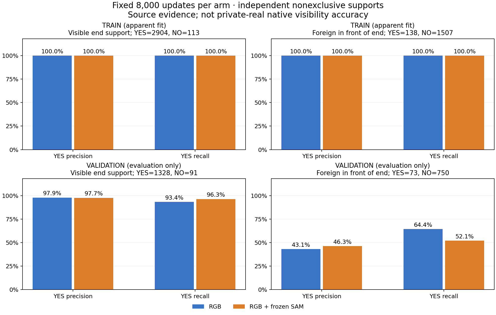

합성·공개 소스에서 고정 실험을 완료했습니다. 사용자 실사에서의 개선과 전체 문제 해결은 아직 입증하지 않았습니다. 최종 모델 두 개를 모두 고정한 뒤 검증 출력을 만들었으며, 모델·문턱·checkpoint를 이 결과로 선택하지 않았습니다.
두 모델은 원래 RGB96·valid·고정 상대좌표를 읽습니다. SAM 추가 모델만 원래 query8 box로 얻은 고정 SAM의 마스크·가용성을 더 읽습니다. 초기 좌표·crop 크기·native 순서·PnP를 변경하지 않았습니다. 각 8,000회, 같은 초기 가중치·샘플 순서·손실·optimizer를 사용했습니다.
합성 TRAIN 4,096행, 공개 실사 1,480행, 기존 가림 합성 3,816행을 보존했습니다. 공개 실사 owner 감독은 기존 weak 253행, 가림 합성 owner 감독은 기존 known 314행에만 있습니다. 합성 검증 2,048행은 별도 평가 전용입니다. 입력 U는 각각 80/194/360/8행입니다. 파생 crop·가림 변형 수를 독립 실사 이미지 수로 해석하지 않습니다.
두 정답은 비배타적입니다. 부분 가림에는 둘 다 YES일 수 있습니다. 자기 가림·모호함·등록 불확실성이 남은 항목은 감독 UNKNOWN으로 보존했고, 배경을 외부 가림으로 이름 바꾸지 않았습니다. 아래 P/R 분모는 각 감독이 알려졌고 원 입력이 유효한 항목입니다.

| 모델 | 소스 | 보임 P | 보임 R | 앞 가림 P | 앞 가림 R | 원 입력 U율 |
|---|---|---|---|---|---|---|
| RGB | SYNTH_TRAIN4096 | 100.0% | 100.0% | 100.0% | 100.0% | 2.0% |
| RGB | SYNTH_VAL2048 | 97.9% | 93.4% | 43.1% | 64.4% | 0.4% |
| RGB + frozen SAM | SYNTH_TRAIN4096 | 100.0% | 100.0% | 100.0% | 100.0% | 2.0% |
| RGB + frozen SAM | SYNTH_VAL2048 | 97.7% | 96.3% | 46.3% | 52.1% | 0.4% |
원 입력이 유효하고 해당 감독이 알려진 항목의 행렬입니다. 감독 UNKNOWN과 입력 U는 서로 다르며 아래에 따로 표시합니다. 입력이 유효한 항목에 confidence 문턱으로 추가 보류를 만들지 않았습니다.
| 모델 | 검증 감독 | 정답 | 예측 NO | 예측 YES | 예측 U |
|---|---|---|---|---|---|
| RGB | 부위 보임 | NO | 65 | 26 | 0 |
| RGB | 부위 보임 | YES | 88 | 1240 | 0 |
| RGB | 외부 앞 가림 | NO | 688 | 62 | 0 |
| RGB | 외부 앞 가림 | YES | 26 | 47 | 0 |
| RGB + frozen SAM | 부위 보임 | NO | 61 | 30 | 0 |
| RGB + frozen SAM | 부위 보임 | YES | 49 | 1279 | 0 |
| RGB + frozen SAM | 외부 앞 가림 | NO | 706 | 44 | 0 |
| RGB + frozen SAM | 외부 앞 가림 | YES | 35 | 38 | 0 |
| 모델 | 검증 감독 | 유효 입력 중 정답 알려짐 | 유효 입력 중 감독 UNKNOWN | 원 입력 U |
|---|---|---|---|---|
| RGB | 부위 보임 | 1419 | 621 | 8 |
| RGB | 외부 앞 가림 | 823 | 1217 | 8 |
| RGB + frozen SAM | 부위 보임 | 1419 | 621 | 8 |
| RGB + frozen SAM | 외부 앞 가림 | 823 | 1217 | 8 |
재질별 분모와 형상별 분모는 서로 겹칩니다. 사용자 실사의 목재·정사각형 평가군과 동일한 촬영 분포는 아닙니다.
| 모델 | 검증 층 | 원 행 | 보임 YES | 보임 P | 보임 R | 앞 가림 YES | 앞 가림 P | 앞 가림 R |
|---|---|---|---|---|---|---|---|---|
| RGB | material:DARK_POLYMER | 1024 | 667 | 98.1% | 92.2% | 38 | 43.9% | 65.8% |
| RGB | material:PROCEDURAL_WOOD | 1024 | 661 | 97.8% | 94.6% | 35 | 42.3% | 62.9% |
| RGB | aspect:RECTANGULAR | 1024 | 697 | 97.7% | 91.5% | 42 | 43.3% | 69.0% |
| RGB | aspect:SQUARE | 1024 | 631 | 98.2% | 95.4% | 31 | 42.9% | 58.1% |
| RGB + frozen SAM | material:DARK_POLYMER | 1024 | 667 | 98.0% | 96.6% | 38 | 57.1% | 63.2% |
| RGB + frozen SAM | material:PROCEDURAL_WOOD | 1024 | 661 | 97.4% | 96.1% | 35 | 35.0% | 40.0% |
| RGB + frozen SAM | aspect:RECTANGULAR | 1024 | 697 | 97.8% | 94.8% | 42 | 41.8% | 54.8% |
| RGB + frozen SAM | aspect:SQUARE | 1024 | 631 | 97.6% | 97.9% | 31 | 55.6% | 48.4% |
새 모델은 foreign YES → E, 아니면 visible YES → D, 나머지 U로 고정 응답합니다. 아래 정답은 두 support가 모두 알려진 경우의 지역 증거 proxy입니다. v61은 중심 픽셀 presence를 학습했고 BOTH를 출력하지 못하므로, 이 표를 같은 의미의 native 가림 정확도라고 부르지 않습니다.
| 소스 | 모델 | D 분모 | E 분모 | D recall | E precision | E recall | 알려진 proxy의 U율 |
|---|---|---|---|---|---|---|---|
| SYNTH_TRAIN4096 | RGB | 1507 | 109 | 100.0% | 100.0% | 100.0% | 0.0% |
| SYNTH_TRAIN4096 | RGB + frozen SAM | 1507 | 109 | 100.0% | 100.0% | 100.0% | 0.0% |
| SYNTH_TRAIN4096 | v61: pixel-presence diagnostic | 1507 | 109 | 25.3% | 7.1% | 78.9% | 0.0% |
| SYNTH_VAL2048 | RGB | 750 | 58 | 91.5% | 36.1% | 60.3% | 0.2% |
| SYNTH_VAL2048 | RGB + frozen SAM | 750 | 58 | 93.6% | 38.9% | 48.3% | 0.6% |
| SYNTH_VAL2048 | v61: pixel-presence diagnostic | 750 | 58 | 21.1% | 7.4% | 81.0% | 0.0% |
고정 288개 사례: 원 RGB·SAM·합성 부위 감독·두 모델 응답
사례는 예측을 보기 전에 원 metadata의 geometry × aspect × material 각 첫 검증 base와 공개 원 촬영 sequence 각 첫 학습 frame으로 정했습니다. 원 RGB는 별도 clean panel로 보존했습니다. 공개 실사의 weak owner를 native 키포인트 정답으로 승격하지 않았습니다.
이 실험은 source에서의 학습 가능성과 남는 오류를 확인합니다. 이번 V181 source 실험에서 사용자 평가 223장은 학습·문턱·모델 선택에서 제외했으며, 이번 단계에서 새 평가 forward를 하지 않았습니다. 실사 전이 성능과 최종 채택 여부는 별도로 확인해야 합니다.